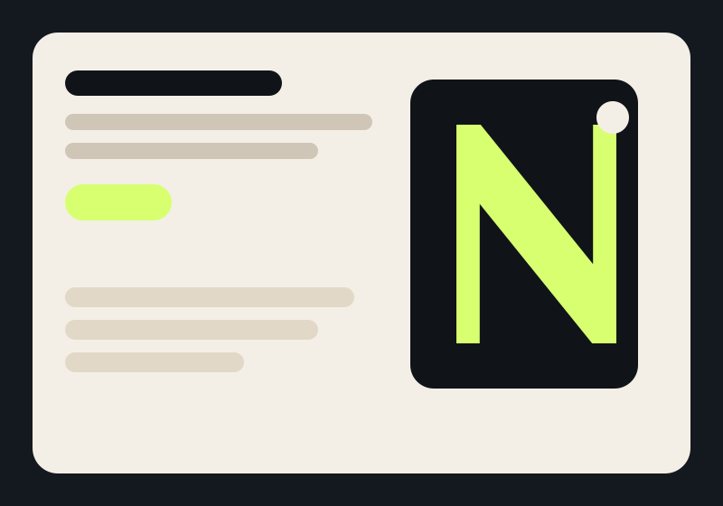

Atlas Revenue
Une identité plus tranchée, un site à forte tension visuelle et un discours centré sur l’efficacité des agents commerciaux.
- Hero immersif et ton plus direct
- Pages services découpées par problème business
- Relais entre branding et logique d’automatisation